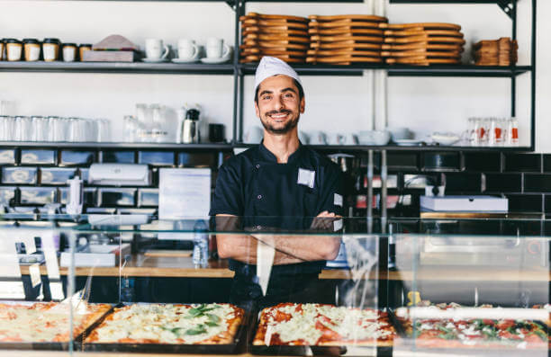
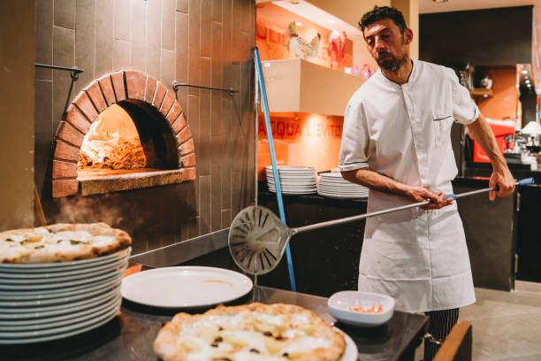

¿Quienes Somos?

En nuestra Pizzería traemos la auténtica tradición napolitana a Palermo, Buenos Aires. Nuestra familia, los Donati, llegó desde Italia con recetas que hoy todavía se sienten en cada pizza. Cada masa se amasa a mano, cada ingrediente se elige con cuidado y cada pizza se hornea con pasión. Somos más que una pizzería: somos un lugar de encuentro, donde la historia, el sabor y la dedicación familiar se combinan para ofrecer experiencias únicas. Vení a descubrir la magia de la pizza artesanal que conecta generaciones y cruza océanos.
¿Como Trabajamos?
Cada pizza de neustra pizzería se prepara con atención a cada detalle. Usamos ingredientes frescos, masas artesanales y técnicas heredadas de nuestros abuelos italianos. Desde la selección de los productos hasta el horno, cuidamos cada paso para que cada pedido sea fresco y delicioso. Nuestra web permite realizar pedidos online de manera fácil y rápida, mientras que en el local ofrecemos un servicio cercano y cálido. Nuestro objetivo es simple: que cada bocado transporte a Italia, que cada pedido sea una experiencia y que disfrutar de nuestras pizzas sea tan fácil como sabroso.
